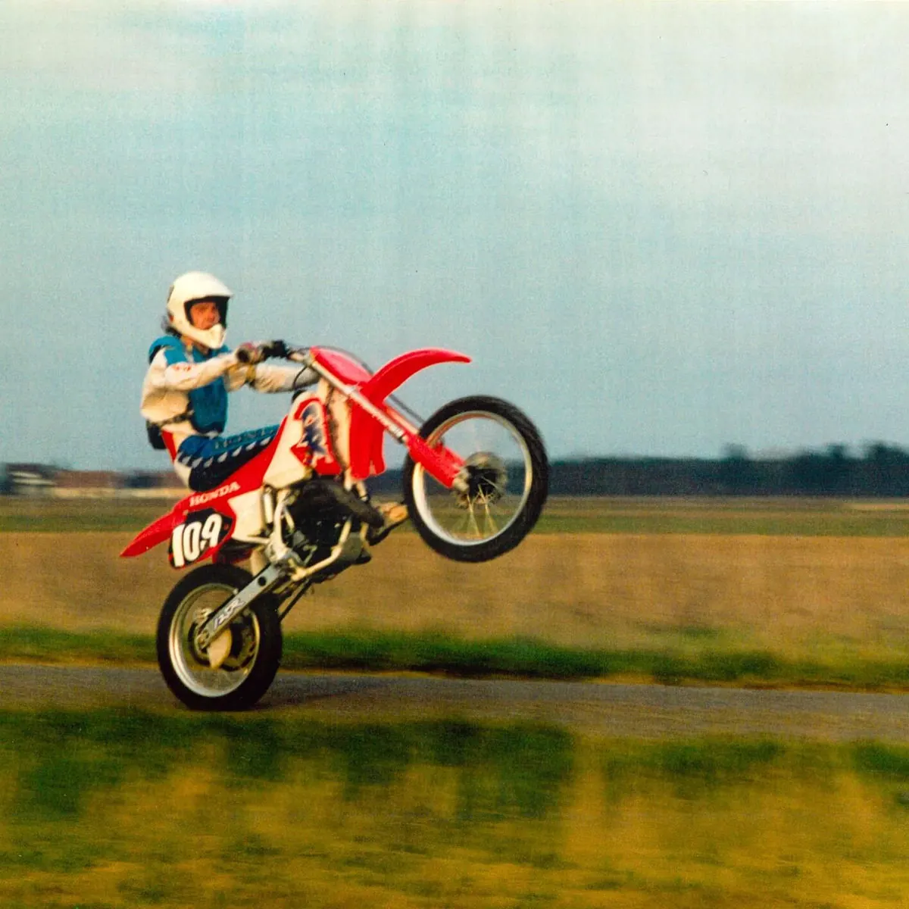

Publié le 3 novembre 2026

Wallace Cleaver a publié le 22 octobre 2026 son projet Saint Laurent. Ce format court de huit titres sans aucun invité explore l'intime et son attachement au Loir-et-Cher.
Le rappeur originaire de Saint-Laurent-Nouan poursuit sa trajectoire avec une régularité remarquable. Après l'album merci paru en 2024, ce nouveau disque confirme son goût pour les formats denses et l'écriture introspective.
L'artiste construit un récit ancré dans la réalité provinciale. Il s'éloigne des codes habituels de la trap festive pour proposer des textes précis sur le doute, la solitude et l'argent.
Pourquoi le projet s'appelle-t-il Saint Laurent ?
Wallace Cleaver a tiré ce nom de sa commune d'origine, Saint-Laurent-Nouan, située dans le Loir-et-Cher. Ce titre symbolise son refus de nier son ancrage provincial tout en poursuivant sa carrière dans la musique.
L'artiste utilise la géographie locale comme un fil conducteur. Il évoque le contraste permanent entre le calme de sa région natale et la frénésie de la capitale. Cette double appartenance nourrit une écriture mélancolique et lucide sur son quotidien.
À l'image du travail mené par Ben PLG sur le quotidien des classes populaires, le rappeur valorise les territoires oubliés sans jouer un personnage artificiel.
Que vaut la tracklist de Saint Laurent ?
La tracklist de huit morceaux se distingue par l'absence totale de featurings et une durée globale de 17 minutes. Ce choix esthétique garantit une narration fluide et homogène du début à la fin.
D'après la fiche Apple Music du projet, l'album s'ouvre sur le morceau 22 avant d'enchaîner sur des titres très personnels. Les morceaux 4 temps, La dette et Paname posent les bases d'un spleen urbain et rural mélangé.
La deuxième moitié aborde la fatigue mentale avec Ma maladie et La chute, suivis de l'interlude La vie après la mort. Le disque s'achève sur Hello mon frère, une conclusion directe sur la solidarité et les liens familiaux.
Voici l'ensemble des titres qui composent ce format court :
| # | Titre | Durée |
|---|---|---|
| 1 | 22 | 2:52 |
| 2 | 4 temps | 2:31 |
| 3 | La dette | 2:40 |
| 4 | Paname | 2:48 |
| 5 | Ma maladie | 2:25 |
| 6 | La chute | 2:10 |
| 7 | La vie après la mort (interlude) | 2:01 |
| 8 | Hello mon frère | 2:24 |
Que faut-il retenir de cet album de Wallace Cleaver ?
La force du projet réside dans sa grande sincérité. Wallace Cleaver évite les formules toutes faites et privilégie des images parlantes sur sa vie entre la province et la capitale.
Les compositions instrumentales restent sobres pour laisser toute la place au texte. Cette orientation sonore donne une vraie cohérence à l'ensemble des huit pistes.
On peut toutefois regretter un format un peu concis. Les dix-sept minutes passent vite, et certains thèmes abordés dans La dette auraient mérité un développement plus long.
Il n'en reste pas moins que Wallace Cleaver livre un disque solide. Son écriture demeure l'une des plus aiguisées de la scène indépendante actuelle.